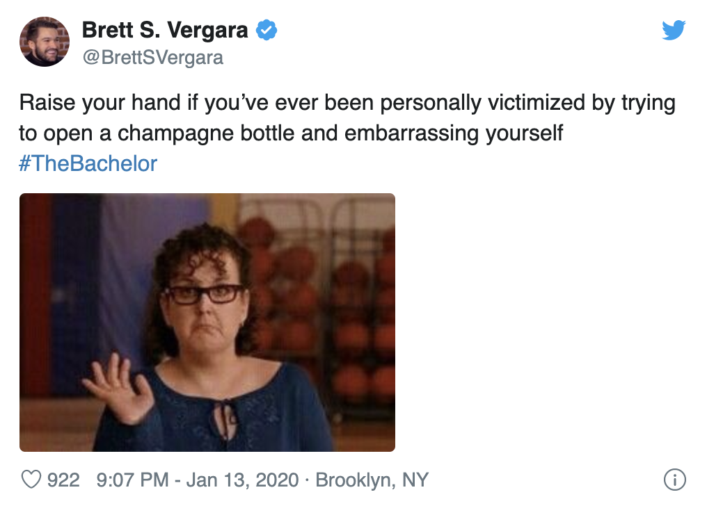
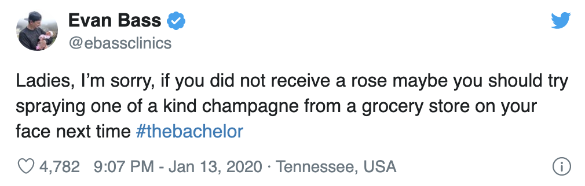
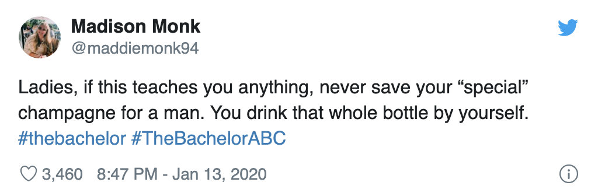

Ahead of the second rose ceremony of season 24, Kelsey Weier found herself at odds with Hannah Ann Sluss while vying for Peter Weber’s affection. Kelsey, 28, explained to viewers that she brought a bottle of champagne from her home in Des Moines, Iowa, to the Bachelor mansion with the intention of sharing it with Peter, also 28.
the clothier said while setting up the bottle in a bucket with champagne glasses by the fireplace. “I wanted to open that the first night and unfortunately it just didn’t happen, so I am excited for tonight.”
Unfortunately for Kelsey, she walked away to converse with the other women, and Hannah Ann, 23, and Peter walked toward the fireplace for a one-on-one chat not long after. Kelsey’s champagne was in plain sight, so Hannah Ann opened the bottle, assuming it was for her and the pilot.
Kelsey almost immediately broke down in tears after hearing the cork pop in the other room. She later confronted the model and accused her of purposely ruining her moment with Peter.
“It’s not OK what you did. I set this up. I brought this bottle from Des Moines,” she told Hannah Ann. “Don’t try to play dumb.”
Somehow, things continued to go south when Kelsey and Peter finally got some alone time. He handed her a different type of champagne in an attempt to calm her down. She took a sip straight from the bottle because she said she is “not a classy bitch all the time.” Seconds later, the bubbly beverage exploded all over Kelsey’s face, making for quite possibly one of the most mortifying dates in Bachelor history.
Naturally, viewers went wild on Twitter over the calamity. “So you’re telling me…..kelsey saved a special bottle of champagne for over a year and the producers told hannah ann to drink it with peter knowing it’s gonna create drama,” one user speculated.
Another fan tweeted, “Raise your hand if you’ve ever been personally victimized by trying to open a champagne bottle and embarrassing yourself.” A third Twitter user shared a clip of the moment the champagne exploded on Kelsey, writing, “Next time anyone asks me why I watch The Bachelor I’m just gonna reference this video.”
Bachelor in Paradise alums got in on the action too. Evan Bass tweeted, “Ladies, I’m sorry, if you did not receive a rose maybe you should try spraying one of a kind champagne from a grocery store on your face next time.” Tia Booth, meanwhile, wrote, “Did everyone else just hold their breath during that champagne pop too or just me?! HOLYYYY.”
 